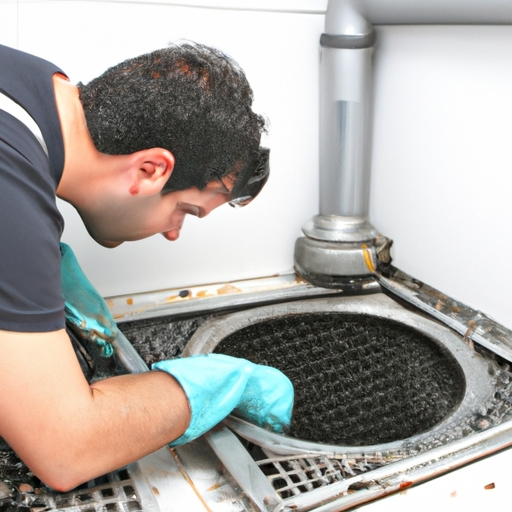

News
Emergency Drain Cleaning
Emergency Drain Cleaning
Clogged drains
Sewer backup
Water damage
Clogged Drains
Clogged Drains
Causes of clogs
DIY solutions
Professional drain cleaning services
Sewer Backup
Sewer Backup
Signs of sewer backup
Risks and health hazards
Remediation and prevention techniques
Water Damage
Water Damage
Effects of water damage
Restoration process
Insurance coverage for water damage
About Us
Contact Us
Thompson Plumbing

What is Emergency Drain Cleaning and When Do You Need It?
Aug 19, 2024
Emergency drain cleaning refers to the process of clearing clogged drains immediately in urgent situations.. This service is usually required when a drain becomes severely blocked, causing water to back up and potentially flood your home or business.
How to Quickly Unclog Your Drains with Emergency Drain Cleaning Services
Aug 19, 2024
When you find yourself dealing with a clogged drain, it can be frustrating and inconvenient.. The water in your sink or shower may be slow to drain or not draining at all, causing a backup of water and possibly even unpleasant odors.
Common causes of clogged drains and how to prevent them
Aug 19, 2024
Clogged drains are a common household nuisance that can lead to frustration and inconvenience.. There are several common causes of clogged drains, but with some simple preventative measures, you can keep your drains flowing smoothly. One of the most common causes of clogged drains is the buildup of hair and soap scum in bathroom drains.